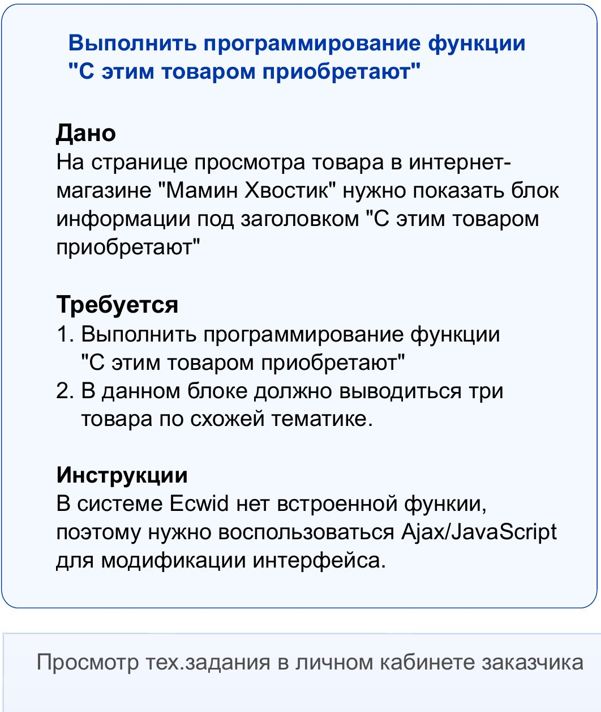
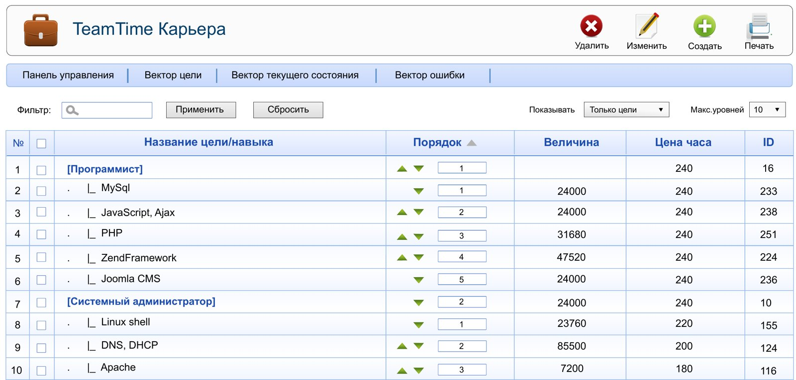

TeamTime BPM
Учёт труда временем, а не деньгами. Процессы, задания и рапорты в одной системе — чтобы руководитель видел реальную работу команды, а каждый сотрудник видел свой вклад и свой рост.
max(У) = max(Т)
Максимальное уважение при максимальной требовательности —
модель А.С. Макаренко, встроенная в инструмент
Причины и происхождение TeamTime
TeamTime не придуман «для рынка». Он вырос из задачи руководителя небольшой команды: видеть, что на самом деле сделано, честно оценивать труд каждого и не тонуть в контроле.
Какую проблему решали
- Работа невидима. Таск-трекер показывает, что задача закрыта, но не показывает, сколько труда в неё вложено и каким путём шла работа.
- Деньги — плохая мера. Ставки разные, цены меняются, а разговор «сколько стоит эта работа» быстро превращается в торг вместо разговора о результате.
- Контроль съедает руководителя. Без системы директор вынужден опрашивать каждого лично — и теряет время, и подрывает доверие.
- Учётные системы тяжелы для малого бизнеса. Чтобы выписать акт и начислить оплату, не должен требоваться отдельный бухгалтерский комплекс.
Веб-студия «Медиа Паблиш»
Команда работает по принципу «уважение + требовательность». Возникает потребность фиксировать работу каждого: задания, рапорты, часы.
Первая версия TeamTime
Учёт, Календарь, BPM-редактор процессов, Карьера, Формальности и кабинет заказчика. Система становится основным инструментом студии.
ИП Гаврилюк А.Н.
TeamTime BPM продолжает работать как инструмент управления проектами — по сей день.
Распределённая RnD-команда
Работающий прототип TeamTime BPM управляет работами дистанционной команды разработчиков встраиваемого ПО ООО «Ростовский завод электроники».
Новая редакция
Концепция оформлена как инструмент модели Макаренко; в процессы добавляются исполнители-роботы и ИИ-агенты.
Время, а не деньги — эквивалент полезного продукта труда
В TeamTime мерой работы служит час подтверждённого полезного труда. Деньги — производная величина: они вычисляются из часов, а не наоборот.
Одинаково понятно всем
Час работы понимают и директор, и инженер, и заказчик. О часах можно договориться заранее, их можно сравнить с планом и обсудить без торга.
Не обесценивается
Цены и курсы меняются, а час труда остаётся часом. Накопленный опыт сотрудника выражается в часах и сохраняет смысл годами.
Учитывается только полезное
Час засчитывается, когда за ним стоит рапорт и принятый результат. «Пустое присутствие» в системе не превращается в оплату.
Сравнимо между профессиями
Программист, дизайнер и администратор работают в одной мере. Разница квалификаций учтена ценой часа, а не разной логикой учёта.
Растёт вместе с человеком
Подтверждённые часы по специальности — это фактический опыт. Набрал опыт — перешёл на следующий уровень с более высокой ценой часа.
Даёт честную экономику
Себестоимость проекта и процесса считается из реальных часов (Activity Based Costing), а не из оценок «на глаз».
Как устроен TeamTime
Пять принципов, на которых держится система. Скриншоты — из интерфейса первой версии; логика за ними не изменилась.
Учёт времени и рапорты
Сотрудник открывает задание, нажимает «Начать» — идёт счётчик времени. По окончании он пишет короткий рапорт: что сделано, каков результат, сколько времени ушло.
- Рапорт — главный документ дня: кратко, по существу, со временем.
- Лента «Что мы делаем?» показывает рапорты команды в реальном времени.
- План / факт часов виден по каждому заданию, проекту и сотруднику.
- Руководитель управляет по рапортам, а не по опросам.

Процессы, проекты, задания — основные единицы планирования и учёта
Повторяющаяся работа описывается процессом один раз и дальше запускается из каталога шаблонов. Каждое задание сформулировано как техническое задание: что дано, что требуется, как делать. Неясных поручений в системе нет.


Информация в нужное время, нужному адресату
Процесс сам передаёт работу по цепочке: когда один участник сдаёт рапорт, следующий получает своё задание — с инструкциями и входными данными.
- Сотрудник видит только свои задания и процессы, в которых участвует, и получает план работ на неделю.
- Руководитель получает рапорты и сводные отчёты по проектам, видам работ и людям.
- Заказчик в своём кабинете (C-Report) видит ход работ, рапорты и план / факт часов.

Прозрачность процессов
Процесс в TeamTime — это живая схема, а не регламент в папке. На диаграмме видно, кто исполнитель на каждом шаге, где сейчас работа и сколько часов запланировано и потрачено.
- Упрощённая нотация BPMN — 10 типовых элементов, понятных без обучения.
- Стоимостной анализ процесса по фактическим часам.
- Сразу видно, на каком шаге возникли трудности или ошибка.
- Архив выполненных процессов — история того, как работа делалась на самом деле.

Задания для роботов и ИИ — часть процессов
Формат задания TeamTime — «Дано · Требуется · Инструкции» — по сути готовая постановка задачи для ИИ-агента. Поэтому робот становится ещё одним участником процесса: у него есть своя дорожка на схеме, свои задания и свои рапорты.
- Рутинные шаги (сбор данных, черновики документов, проверки) выполняет агент.
- Агент сдаёт рапорт в том же формате, что и человек, — работа остаётся прозрачной.
- Решение и контроль качества остаются за человеком.
- Видно, сколько времени сотрудников освободила автоматизация.
Состав программных модулей
Модули работают на общей базе сотрудников, проектов и заданий. Внедрять можно постепенно: начать с Учёта и добавлять остальные по мере надобности.
TeamTime Учёт
Ядро системы: сотрудники, проекты, виды работ, задания и рапорты, итоговые отчёты.
Кабинет сотрудника
- Счётчик времени выполнения задания.
- Текст задания в виде технического задания.
- Ввод рапорта; фильтр заданий по статусу, срочности, проекту.
Кабинет руководителя
- Временные и финансовые затраты по проектам, видам работ, сотрудникам.
- Рапорты сотрудников и итоговые отчёты за период.
Кабинет заказчика (C-Report)
- Журнал работ, рапорты и план / факт часов по проекту.
- Промежуточные результаты, материалы и инструкции.

TeamTime Calendar
Календарь заданий команды: кто, что и когда делает.
- Режимы месяц / неделя / день, перенос заданий мышью.
- Фильтры по сотрудникам, проектам, видам работ, процессам.
- Подзадания и контроль план / факт часов с их учётом.
- Повторяющиеся задания: ежедневные, еженедельные, ежемесячные, ежегодные.
- Еженедельная рассылка плана работ каждому сотруднику.

TeamTime BPM
Редактор бизнес-процессов, в котором схема — это одновременно состав заданий и логистика их исполнения.
- Упрощённая BPMN-нотация из 10 типовых элементов.
- Каждое действие на схеме — задание с исполнителем, план-часами и инструкциями.
- Запуск процесса: задания автоматически переходят от одного исполнителя к другому.
- Стоимостной анализ (ABC), каталог шаблонов, архив, сферы деятельности.
- Исполнителем шага может быть человек, робот или ИИ-агент.
TeamTime Карьера
Учёт фактического опыта по специальностям и программа роста каждого сотрудника.
- Вектор целей. При приёме на работу руководитель вместе с сотрудником формирует набор профессиональных целей, согласованных с целями компании.
- Фактический опыт. Подтверждённые часы по заданиям автоматически копятся по навыкам и специальностям.
- Уровни и цена часа. Прозрачная тарификация — от стажёра до руководителя; рост уровня по подтверждённым часам.
- Переподготовка. Индивидуальный образовательный маршрут: учебный план как BPMN-процесс, учебные задания с рапортами, оценочный лист навыков по итогам.


TeamTime Формальности
Генерация отчётных документов по шаблонам — из тех же данных, что уже есть в системе: процессов, рапортов, реквизитов заказчиков и данных сотрудников.
- Заказчику: сметы, акты выполненных работ, счета, типовые договоры.
- Сотруднику: договоры, расходные кассовые ордера, начисление оплаты.
- Потенциальному клиенту: онлайн-калькулятор услуг на сайте, построенный по процессу.
- Произвольные шаблоны с переменными.


TeamTime — инструмент модели Макаренко в управлении коллективом
Модель А.С. Макаренко держится на устройстве коллектива, а не на личных качествах руководителя. TeamTime делает это устройство повседневной практикой: каждый принцип модели имеет в системе конкретный механизм.
max(У) = max(Т)
Высокое требование к человеку выражает уважение к нему, а уважение без требования означает безразличие. В TeamTime требование и уважение — одно действие: чётко поставленное задание с честно учтённым трудом.
| Принцип модели | Как это реализует TeamTime |
|---|---|
| Максимальная требовательность | Каждое задание — «Дано · Требуется · Инструкции» с план-часами. Результат принимается контролем качества; засчитывается только подтверждённый труд. |
| Максимальное уважение | Нет микроменеджмента: руководитель видит работу по рапортам. Оплата предсказуема и вычисляется из часов; вклад каждого виден команде. |
| Рапорт командирав коммуне — ежедневный | Ежедневный рапорт сотрудника: кратко, обоснованно, с указанием времени. Лента «Что мы делаем?» вместо опросов. |
| Коллектив как инструмент | Процессы связывают людей: результат одного — входные данные другого. Общий журнал работ делает команду видимой самой себе. |
| Перспективные линии | Вектор целей в модуле Карьера: близкая перспектива — следующий уровень, дальняя — новая специальность. |
| Параллельное действие | Руководитель управляет укладом — процессами и шаблонами, — а не каждым человеком по отдельности. |
| Производительный труд и обучение | Учебные задания — такие же задания процесса, с рапортами и часами; индивидуальный образовательный маршрут ведётся в той же системе. |
| Традиции | Каталог шаблонов процессов хранит, «как у нас принято делать», и передаёт это новым сотрудникам. |
Подробно о модели
История колонии и коммуны, положения о коллективной работе, опыт применения с 2008 годаВарианты внедрения
Функциональность одинакова в обоих вариантах. Разница — в том, где хранятся данные и кто обслуживает сервер.
SaaS
TeamTime в облачном хостинге
- Начать работу можно сразу — без сервера и администратора.
- Обновления, резервное копирование и поддержка — на стороне разработчика.
- Доступ из браузера для сотрудников, руководителя и заказчиков из любой точки.
- Удобно для распределённых и дистанционных команд.
Подходит: небольшим компаниям, студиям, проектным и удалённым командам.
Personal server
Во внутреннем контуре предприятия
- Данные о работах, людях и процессах не покидают периметр предприятия.
- Установка на сервер заказчика; работа в закрытой сети.
- Интеграция с внутренними системами и собственными ИИ-агентами.
- Настройка шаблонов процессов и документов под регламенты предприятия.
Подходит: производственным предприятиям, RnD-подразделениям, организациям с требованиями к защите информации.
Обсудить внедрение
Покажу работающий прототип, расскажу о практике управления дистанционной командой и помогу выбрать вариант внедрения.